Fitting Exponential Models to Data
Learning Objectives
- Draw and interpret scatter diagrams (linear, exponential, logarithmic). (CA 4.3.1)
- Fit a regression equation to a set of data and use the linear (or exponential) model to make predictions. (CA 4.3.4)
Objective 1: Draw and interpret scatter diagrams (linear, exponential, logarithmic). (CA 4.3.1)
A Scatter Plot is a graph of plotted points that may show a relationship between the variables in a set of data.
Draw and interpret scatter diagrams (linear, exponential, logarithmic).
Using a Scatter Plot to Investigate Cricket Chirps
The table below shows the number of cricket chirps in 15 seconds, for several different air temperatures, in degrees Fahrenheit Selected data from http://classic.globe.gov/fsl/scientistsblog/2007/10/. Retrieved Aug 3, 2010 . Plot this data, and determine whether the data appears to be linearly related.
| Chirps | 44 | 35 | 20.4 | 33 | 31 | 35 | 18.5 | 37 | 26 |
| Temperature | 80.5 | 70.5 | 57 | 66 | 68 | 72 | 52 | 73.5 | 53 |
Solution
Plotting this data, as depicted below, suggests that there may be a trend. We can see from the trend in the data that the number of chirps increases as the temperature increases. The trend appears to be roughly linear, though certainly not perfectly so.
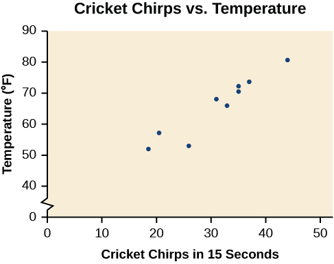
Practice Makes Perfect
Draw and interpret scatter diagrams ( linear, exponential, logarithmic).
Make a scatter plot for the table below. Does it look linear? Exponential? Logarithmic?
| x | 1 | 2 | 3 | 4 | 5 | 6 | 7 | 8 | 9 |
| y | 0 | 1.5 | 2.2 | 2.8 | 3.5 | 3.6 | 3.9 | 4.3 | 4.4 |
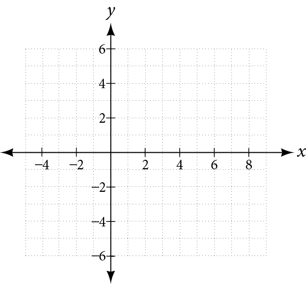
Make a scatter plot for the table below. Does it look linear? Exponential? Logarithmic?
| x | 1 | 2 | 3 | 4 | 5 | 6 | 7 | 8 | 9 |
| y | 3.3 | 5.6 | 9.1 | 15.1 | 24.4 | 40.2 | 66.2 | 108.4 | 180.1 |
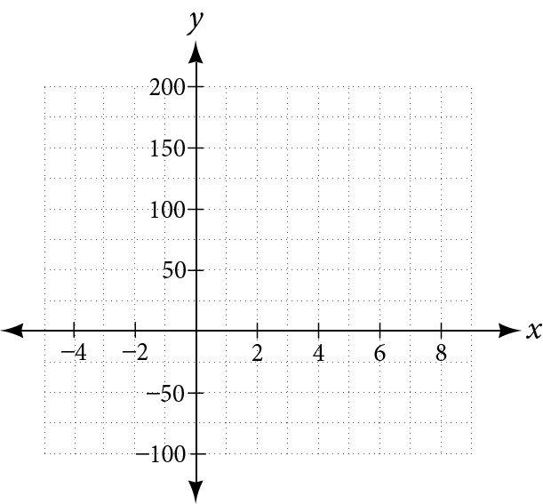
Make a scatter plot for the table below. Does it look linear? Exponential? Logarithmic?
| x | 1 | 2 | 3 | 4 | 5 | 6 |
| y | 3 | 5.5 | 7 | 10 | 12.1 | 14.9 |
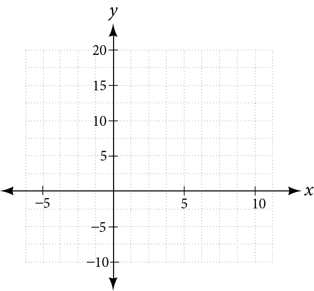
Objective 2: Fit a regression equation to a set of data and use the linear (or exponential) model to make predictions. (CA 4.3.4)
We can find a linear function that fits the data in the previous problem by “eyeballing” a line that seems to fit. But while estimating a line works relatively well, technology can help us find a line that fits the data as perfect as possible.
This line is called the Least Squares Regression Line or Linear Regression Model.
A regression line is a line that is closest to the data in the scatter plot, which means that such a line is a best fit for the data.
Fit a regression equation to a set of data and use the linear (or exponential) model to make predictions.
Fit a regression equation to a set of data and use the linear (or exponential) model to make predictions.
Find the linear regression line using the cricket-chirp data in the example earlier in this section, and find the temperature if there are 30 chirps in 15 seconds.
Solution
Enter the input (chirps) in List 1.
-
Enter the output (temperature) in List 2.
. L1 44 35 20.4 33 31 35 18.5 37 26 L2 80.5 70.5 57 66 68 72 52 73.5 53 - On a graphing utility, select Linear Regression (LinReg). Using the cricket chirp data, with technology we obtain the equation: T(c)=30.281+1.143c
- To find the temperature for 30 chirps in 15 seconds we substitute 30 for x and find T:
- The graph of the scatter plot with the regression line of best fit is shown.
Practice Makes Perfect
Fit a regression equation to a set of data and use the linear (or exponential) model to make predictions.
Gasoline consumption in the United States has been steadily increasing from 1994 to 2004.
| Year | 94 | 95 | 96 | 97 | 98 | 99 | 00 | 01 | 02 | 03 | 04 |
| Consumption (billions of gallons) |
113 | 116 | 118 | 119 | 123 | 125 | 126 | 128 | 131 | 133 | 136 |
- ⓐ Determine whether the trend is linear, and if so, use your graphing utility to find a model for the data.
- ⓑ Use the model to predict the consumption in 2008.
We determined in the second practice problem, earlier in this section, that the data below has an exponential trend. Use your graphing utility to find an exponential model that fits the data the best and write your exponential model below (Hint: instead of choosing Linear Regression, choose Exponential Regression).
| x | 1 | 2 | 3 | 4 | 5 | 6 | 7 | 8 | 9 |
| y | 3.3 | 5.6 | 9.1 | 15.1 | 24.4 | 40.2 | 66.2 | 108.4 | 180.1 |
In previous sections of this chapter, we were either given a function explicitly to graph or evaluate, or we were given a set of points that were guaranteed to lie on the curve. Then we used algebra to find the equation that fit the points exactly. In this section, we use a modeling technique called regression analysis to find a curve that models data collected from real-world observations. With regression analysis, we don’t expect all the points to lie perfectly on the curve. The idea is to find a model that best fits the data. Then we use the model to make predictions about future events.
Do not be confused by the word model. In mathematics, we often use the terms function, equation, and model interchangeably, even though they each have their own formal definition. The term model is typically used to indicate that the equation or function approximates a real-world situation.
We will concentrate on three types of regression models in this section: exponential, logarithmic, and logistic. Having already worked with each of these functions gives us an advantage. Knowing their formal definitions, the behavior of their graphs, and some of their real-world applications gives us the opportunity to deepen our understanding. As each regression model is presented, key features and definitions of its associated function are included for review. Take a moment to rethink each of these functions, reflect on the work we’ve done so far, and then explore the ways regression is used to model real-world phenomena.
Building an Exponential Model from Data
As we’ve learned, there are a multitude of situations that can be modeled by exponential functions, such as investment growth, radioactive decay, atmospheric pressure changes, and temperatures of a cooling object. What do these phenomena have in common? For one thing, all the models either increase or decrease as time moves forward. But that’s not the whole story. It’s the way data increase or decrease that helps us determine whether it is best modeled by an exponential equation. Knowing the behavior of exponential functions in general allows us to recognize when to use exponential regression, so let’s review exponential growth and decay.
Recall that exponential functions have the form or When performing regression analysis, we use the form most commonly used on graphing utilities, Take a moment to reflect on the characteristics we’ve already learned about the exponential function (assume
- must be greater than zero and not equal to one.
- The initial value of the model is
- If the function models exponential growth. As increases, the outputs of the model increase slowly at first, but then increase more and more rapidly, without bound.
- If the function models exponential decay. As increases, the outputs for the model decrease rapidly at first and then level off to become asymptotic to the x-axis. In other words, the outputs never become equal to or less than zero.
As part of the results, your calculator will display a number known as the correlation coefficient, labeled by the variable or (You may have to change the calculator’s settings for these to be shown.) The values are an indication of the “goodness of fit” of the regression equation to the data. We more commonly use the value of instead of but the closer either value is to 1, the better the regression equation approximates the data.
Using Exponential Regression to Fit a Model to Data
In 2007, a university study was published investigating the crash risk of alcohol impaired driving. Data from 2,871 crashes were used to measure the association of a person’s blood alcohol level (BAC) with the risk of being in an accident. Table 1 shows results from the study Source: Indiana University Center for Studies of Law in Action, 2007. The relative risk is a measure of how many times more likely a person is to crash. So, for example, a person with a BAC of 0.09 is 3.54 times as likely to crash as a person who has not been drinking alcohol.
| BAC | 0 | 0.01 | 0.03 | 0.05 | 0.07 | 0.09 |
| Relative Risk of Crashing | 1 | 1.03 | 1.06 | 1.38 | 2.09 | 3.54 |
| BAC | 0.11 | 0.13 | 0.15 | 0.17 | 0.19 | 0.21 |
| Relative Risk of Crashing | 6.41 | 12.6 | 22.1 | 39.05 | 65.32 | 99.78 |
- Let represent the BAC level, and let represent the corresponding relative risk. Use exponential regression to fit a model to these data.
- After 6 drinks, a person weighing 160 pounds will have a BAC of about How many times more likely is a person with this weight to crash if they drive after having a 6-pack of beer? Round to the nearest hundredth.
Solution
- Using the STAT then EDIT menu on a graphing utility, list the BAC values in L1 and the relative risk values in L2. Then use the STATPLOT feature to verify that the scatterplot follows the exponential pattern shown in Figure 2:
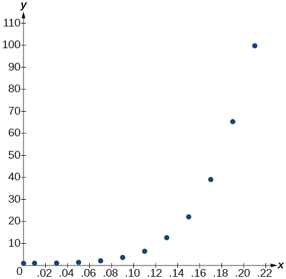
Figure 2 Use the “ExpReg” command from the STAT then CALC menu to obtain the exponential model,
Converting from scientific notation, we have:
Notice that which indicates the model is a good fit to the data. To see this, graph the model in the same window as the scatterplot to verify it is a good fit as shown in Figure 3:
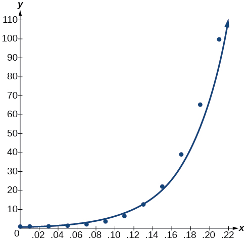
Figure 3 -
Use the model to estimate the risk associated with a BAC of Substitute for in the model and solve for
If a 160-pound person drives after having 6 drinks, they are about 26.35 times more likely to crash than if driving while sober.
Building a Logarithmic Model from Data
Just as with exponential functions, there are many real-world applications for logarithmic functions: intensity of sound, pH levels of solutions, yields of chemical reactions, production of goods, and growth of infants. As with exponential models, data modeled by logarithmic functions are either always increasing or always decreasing as time moves forward. Again, it is the way they increase or decrease that helps us determine whether a logarithmic model is best.
Recall that logarithmic functions increase or decrease rapidly at first, but then steadily slow as time moves on. By reflecting on the characteristics we’ve already learned about this function, we can better analyze real world situations that reflect this type of growth or decay. When performing logarithmic regression analysis, we use the form of the logarithmic function most commonly used on graphing utilities, For this function
- All input values, must be greater than zero.
- The point is on the graph of the model.
- If the model is increasing. Growth increases rapidly at first and then steadily slows over time.
- If the model is decreasing. Decay occurs rapidly at first and then steadily slows over time.
Using Logarithmic Regression to Fit a Model to Data
Due to advances in medicine and higher standards of living, life expectancy has been increasing in most developed countries since the beginning of the 20th century.
Table 3 shows the average life expectancies, in years, of Americans from 1900–2010Source: Center for Disease Control and Prevention, 2013.
| Year | 1900 | 1910 | 1920 | 1930 | 1940 | 1950 |
| Life Expectancy(Years) | 47.3 | 50.0 | 54.1 | 59.7 | 62.9 | 68.2 |
| Year | 1960 | 1970 | 1980 | 1990 | 2000 | 2010 |
| Life Expectancy(Years) | 69.7 | 70.8 | 73.7 | 75.4 | 76.8 | 78.7 |
- ⓐ Let represent time in decades starting with for the year 1900, for the year 1910, and so on. Let represent the corresponding life expectancy. Use logarithmic regression to fit a model to these data.
- ⓑ Use the model to predict the average American life expectancy for the year 2030.
Solution
- ⓐ Using the STAT then EDIT menu on a graphing utility, list the years using values 1–12 in L1 and the corresponding life expectancy in L2. Then use the STATPLOT feature to verify that the scatterplot follows a logarithmic pattern as shown in Figure 4:
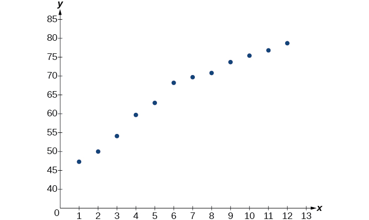
Figure 4 Use the “LnReg” command from the STAT then CALC menu to obtain the logarithmic model,
Next, graph the model in the same window as the scatterplot to verify it is a good fit as shown in Figure 5:
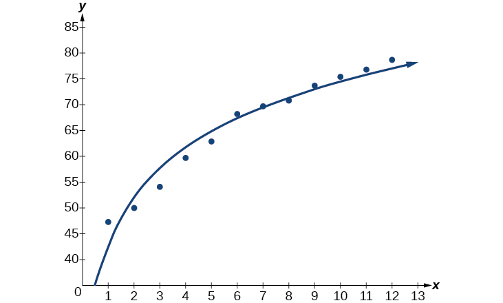
Figure 5 - ⓑ To predict the life expectancy of an American in the year 2030, substitute for the in the model and solve for
If life expectancy continues to increase at this pace, the average life expectancy of an American will be 79.1 by the year 2030.
Building a Logistic Model from Data
Like exponential and logarithmic growth, logistic growth increases over time. One of the most notable differences with logistic growth models is that, at a certain point, growth steadily slows and the function approaches an upper bound, or limiting value. Because of this, logistic regression is best for modeling phenomena where there are limits in expansion, such as availability of living space or nutrients.
It is worth pointing out that logistic functions actually model resource-limited exponential growth. There are many examples of this type of growth in real-world situations, including population growth and spread of disease, rumors, and even stains in fabric. When performing logistic regression analysis, we use the form most commonly used on graphing utilities:
Recall that:
- is the initial value of the model.
- when the model increases rapidly at first until it reaches its point of maximum growth rate, At that point, growth steadily slows and the function becomes asymptotic to the upper bound
- is the limiting value, sometimes called the carrying capacity, of the model.
Using Logistic Regression to Fit a Model to Data
Mobile telephone service has increased rapidly in America since the mid 1990s. Today, almost all residents have cellular service. Table 5 shows the percentage of Americans with cellular service between the years 1995 and 2012 Source: The World Bank, 2013.
| Year | Americans with Cellular Service (%) | Year | Americans with Cellular Service (%) |
|---|---|---|---|
| 1995 | 12.69 | 2004 | 62.852 |
| 1996 | 16.35 | 2005 | 68.63 |
| 1997 | 20.29 | 2006 | 76.64 |
| 1998 | 25.08 | 2007 | 82.47 |
| 1999 | 30.81 | 2008 | 85.68 |
| 2000 | 38.75 | 2009 | 89.14 |
| 2001 | 45.00 | 2010 | 91.86 |
| 2002 | 49.16 | 2011 | 95.28 |
| 2003 | 55.15 | 2012 | 98.17 |
- ⓐ Let represent time in years starting with for the year 1995. Let represent the corresponding percentage of residents with cellular service. Use logistic regression to fit a model to these data.
- ⓑ Use the model to calculate the percentage of Americans with cell service in the year 2013. Round to the nearest tenth of a percent.
- ⓒ Discuss the value returned for the upper limit, What does this tell you about the model? What would the limiting value be if the model were exact?
Solution
- ⓐ
Using the STAT then EDIT menu on a graphing utility, list the years using values 0–15 in L1 and the corresponding percentage in L2. Then use the STATPLOT feature to verify that the scatterplot follows a logistic pattern as shown in Figure 6:
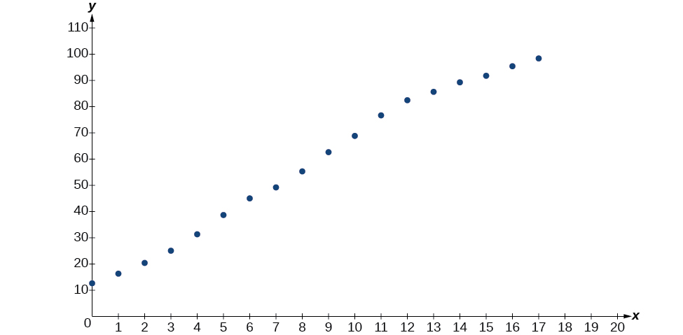
Figure 6 Use the “Logistic” command from the STAT then CALC menu to obtain the logistic model,
Next, graph the model in the same window as shown in Figure 7 the scatterplot to verify it is a good fit:
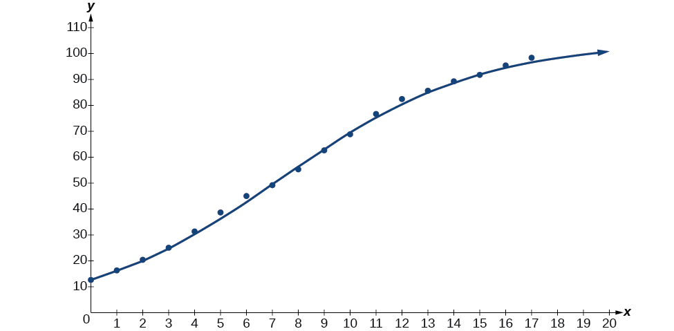
Figure 7 - ⓑ
To approximate the percentage of Americans with cellular service in the year 2013, substitute for the in the model and solve for
According to the model, about 99.3% of Americans had cellular service in 2013.
- ⓒ
The model gives a limiting value of about 105. This means that the maximum possible percentage of Americans with cellular service would be 105%, which is impossible. (How could over 100% of a population have cellular service?) If the model were exact, the limiting value would be and the model’s outputs would get very close to, but never actually reach 100%. After all, there will always be someone out there without cellular service!
Key Concepts
- Exponential regression is used to model situations where growth begins slowly and then accelerates rapidly without bound, or where decay begins rapidly and then slows down to get closer and closer to zero.
- We use the command “ExpReg” on a graphing utility to fit function of the form to a set of data points. See Example 3.
- Logarithmic regression is used to model situations where growth or decay accelerates rapidly at first and then slows over time.
- We use the command “LnReg” on a graphing utility to fit a function of the form to a set of data points. See Example 4.
- Logistic regression is used to model situations where growth accelerates rapidly at first and then steadily slows as the function approaches an upper limit.
- We use the command “Logistic” on a graphing utility to fit a function of the form to a set of data points. See Example 5.
Section Exercises
Verbal
What situations are best modeled by a logistic equation? Give an example, and state a case for why the example is a good fit.
Solution
Logistic models are best used for situations that have limited values. For example, populations cannot grow indefinitely since resources such as food, water, and space are limited, so a logistic model best describes populations.
What is a carrying capacity? What kind of model has a carrying capacity built into its formula? Why does this make sense?
What is regression analysis? Describe the process of performing regression analysis on a graphing utility.
Solution
Regression analysis is the process of finding an equation that best fits a given set of data points. To perform a regression analysis on a graphing utility, first list the given points using the STAT then EDIT menu. Next graph the scatter plot using the STAT PLOT feature. The shape of the data points on the scatter graph can help determine which regression feature to use. Once this is determined, select the appropriate regression analysis command from the STAT then CALC menu.
What might a scatterplot of data points look like if it were best described by a logarithmic model?
What does the y-intercept on the graph of a logistic equation correspond to for a population modeled by that equation?
Solution
The y-intercept on the graph of a logistic equation corresponds to the initial population for the population model.
Graphical
For the following exercises, match the given function of best fit with the appropriate scatterplot in Figure 8 through Figure 12. Answer using the letter beneath the matching graph.
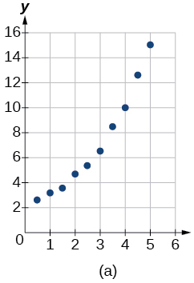
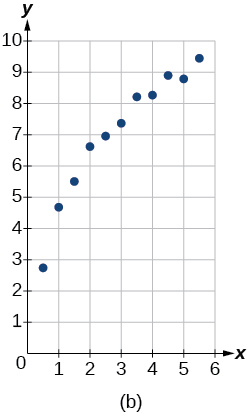
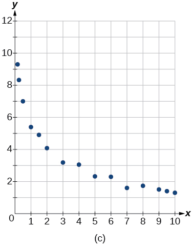
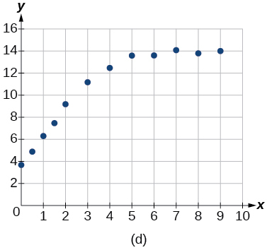
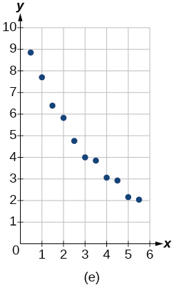
Solution
C
Solution
B
Numeric
To the nearest whole number, what is the initial value of a population modeled by the logistic equation What is the carrying capacity?
Solution
; 175
Rewrite the exponential model as an equivalent model with base Express the exponent to four significant digits.
A logarithmic model is given by the equation To the nearest hundredth, for what value of does
Solution
A logistic model is given by the equation To the nearest hundredth, for what value of t does
What is the y-intercept on the graph of the logistic model given in the previous exercise?
Solution
y-intercept:
Technology
For the following exercises, use this scenario: The population of a koi pond over months is modeled by the function
Graph the population model to show the population over a span of years.
What was the initial population of koi?
Solution
koi
How many koi will the pond have after one and a half years?
How many months will it take before there are koi in the pond?
Solution
about months.
Use the intersect feature to approximate the number of months it will take before the population of the pond reaches half its carrying capacity.
For the following exercises, use this scenario: The population of an endangered species habitat for wolves is modeled by the function where is given in years.
Graph the population model to show the population over a span of years.
Solution
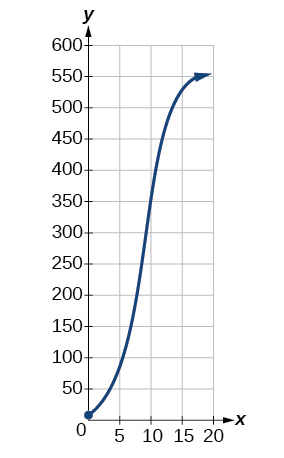
What was the initial population of wolves transported to the habitat?
How many wolves will the habitat have after years?
Solution
About 38 wolves
How many years will it take before there are wolves in the habitat?
Use the intersect feature to approximate the number of years it will take before the population of the habitat reaches half its carrying capacity.
Solution
About 8.7 years
For the following exercises, refer to Table 7.
| x | 1 | 2 | 3 | 4 | 5 | 6 |
| f(x) | 1125 | 1495 | 2310 | 3294 | 4650 | 6361 |
Use a graphing calculator to create a scatter diagram of the data.
Use the regression feature to find an exponential function that best fits the data in the table.
Solution
Write the exponential function as an exponential equation with base
Graph the exponential equation on the scatter diagram.
Solution
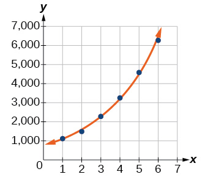
Use the intersect feature to find the value of for which
For the following exercises, refer to Table 8.
| x | 1 | 2 | 3 | 4 | 5 | 6 |
| f(x) | 555 | 383 | 307 | 210 | 158 | 122 |
Use a graphing calculator to create a scatter diagram of the data.
Solution
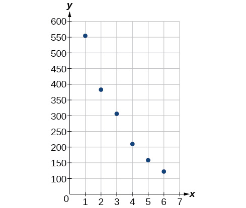
Use the regression feature to find an exponential function that best fits the data in the table.
Write the exponential function as an exponential equation with base
Solution
Graph the exponential equation on the scatter diagram.
Use the intersect feature to find the value of for which
Solution
When
For the following exercises, refer to Table 9.
| x | 1 | 2 | 3 | 4 | 5 | 6 |
| f(x) | 5.1 | 6.3 | 7.3 | 7.7 | 8.1 | 8.6 |
Use a graphing calculator to create a scatter diagram of the data.
Use the LOGarithm option of the REGression feature to find a logarithmic function of the form that best fits the data in the table.
Solution
Use the logarithmic function to find the value of the function when
Graph the logarithmic equation on the scatter diagram.
Solution
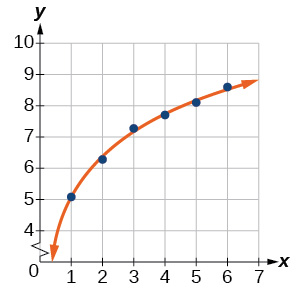
Use the intersect feature to find the value of for which
For the following exercises, refer to Table 10.
| x | 1 | 2 | 3 | 4 | 5 | 6 | 7 | 8 |
| f(x) | 7.5 | 6 | 5.2 | 4.3 | 3.9 | 3.4 | 3.1 | 2.9 |
Use a graphing calculator to create a scatter diagram of the data.
Solution
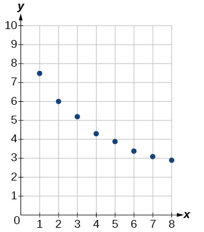
Use the LOGarithm option of the REGression feature to find a logarithmic function of the form that best fits the data in the table.
Use the logarithmic function to find the value of the function when
Solution
When
Graph the logarithmic equation on the scatter diagram.
Use the intersect feature to find the value of for which
Solution
When
For the following exercises, refer to Table 11.
| x | 1 | 2 | 3 | 4 | 5 | 6 | 7 | 8 | 9 | 10 |
| f(x) | 8.7 | 12.3 | 15.4 | 18.5 | 20.7 | 22.5 | 23.3 | 24 | 24.6 | 24.8 |
Use a graphing calculator to create a scatter diagram of the data.
Use the LOGISTIC regression option to find a logistic growth model of the form that best fits the data in the table.
Solution
Graph the logistic equation on the scatter diagram.
To the nearest whole number, what is the predicted carrying capacity of the model?
Solution
About 25
Use the intersect feature to find the value of for which the model reaches half its carrying capacity.
For the following exercises, refer to Table 12.
| 0 | 2 | 4 | 5 | 7 | 8 | 10 | 11 | 15 | 17 | |
| 12 | 28.6 | 52.8 | 70.3 | 99.9 | 112.5 | 125.8 | 127.9 | 135.1 | 135.9 |
Use a graphing calculator to create a scatter diagram of the data.
Solution
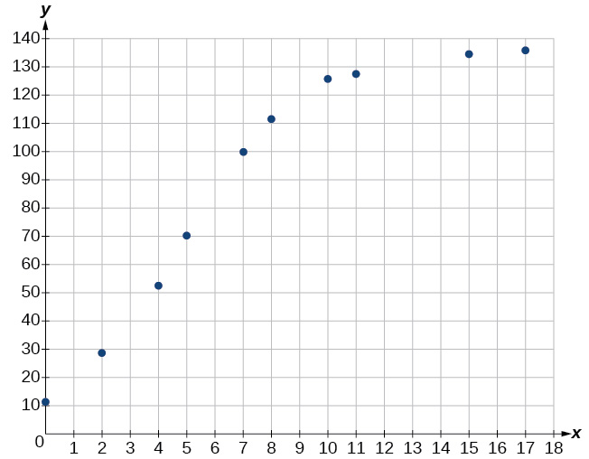
Use the LOGISTIC regression option to find a logistic growth model of the form that best fits the data in the table.
Graph the logistic equation on the scatter diagram.
Solution
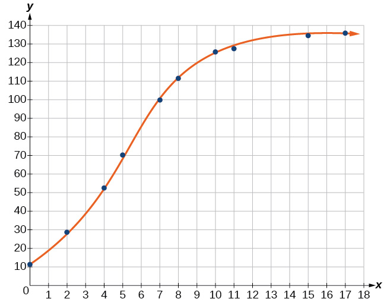
To the nearest whole number, what is the predicted carrying capacity of the model?
Use the intersect feature to find the value of for which the model reaches half its carrying capacity.
Solution
When
Extensions
Recall that the general form of a logistic equation for a population is given by such that the initial population at time is Show algebraically that
Use a graphing utility to find an exponential regression formula and a logarithmic regression formula for the points and Round all numbers to 6 decimal places. Graph the points and both formulas along with the line on the same axis. Make a conjecture about the relationship of the regression formulas.
Solution
; ; the regression curves are symmetrical about , so it appears that they are inverse functions.
Verify the conjecture made in the previous exercise. Round all numbers to six decimal places when necessary.
Find the inverse function for the logistic function Show all steps.
Solution
Use the result from the previous exercise to graph the logistic model along with its inverse on the same axis. What are the intercepts and asymptotes of each function?
Chapter Review Exercises
Exponential Functions
Determine whether the function represents exponential growth, exponential decay, or neither. Explain
Solution
exponential decay; The growth factor, is between and
The population of a herd of deer is represented by the function where is given in years. To the nearest whole number, what will the herd population be after years?
Find an exponential equation that passes through the points and
Solution
Determine whether Table 13 could represent a function that is linear, exponential, or neither. If it appears to be exponential, find a function that passes through the points.
| x | 1 | 2 | 3 | 4 |
| f(x) | 3 | 0.9 | 0.27 | 0.081 |
A retirement account is opened with an initial deposit of $8,500 and earns interest compounded monthly. What will the account be worth in years?
Solution
Hsu-Mei wants to save $5,000 for a down payment on a car. To the nearest dollar, how much will she need to invest in an account now with APR, compounded daily, in order to reach her goal in years?
Does the equation represent continuous growth, continuous decay, or neither? Explain.
Solution
continuous decay; the growth rate is negative.
Suppose an investment account is opened with an initial deposit of earning interest, compounded continuously. How much will the account be worth after years?
Graphs of Exponential Functions
Graph the function State the domain and range and give the y-intercept.
Solution
domain: all real numbers; range: all real numbers strictly greater than zero; y-intercept: (0, 3.5);
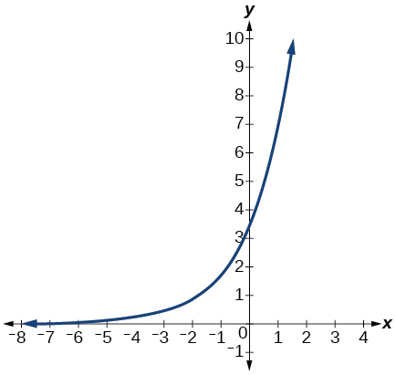
Graph the function and its reflection about the y-axis on the same axes, and give the y-intercept.
The graph of is reflected about the y-axis and stretched vertically by a factor of What is the equation of the new function, State its y-intercept, domain, and range.
Solution
y-intercept: Domain: all real numbers; Range: all real numbers greater than
The graph below shows transformations of the graph of What is the equation for the transformation?
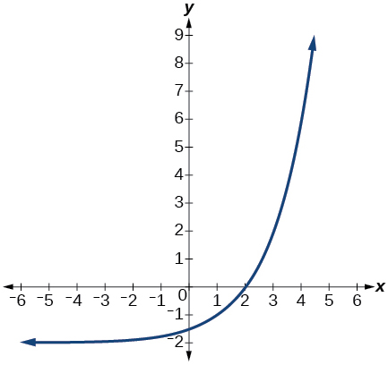
Logarithmic Functions
Rewrite as an equivalent exponential equation.
Solution
Rewrite as an equivalent exponential equation.
Rewrite as an equivalent logarithmic equation.
Solution
Rewrite as an equivalent logarithmic equation.
Solve for x if by converting the logarithmic equation to exponential form.
Solution
Evaluate without using a calculator.
Evaluate without using a calculator.
Solution
Evaluate using a calculator. Round to the nearest thousandth.
Evaluate without using a calculator.
Solution
Evaluate using a calculator. Round to the nearest thousandth.
Graphs of Logarithmic Functions
Graph the function
Solution
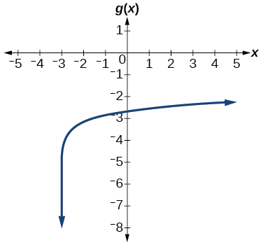
Graph the function
State the domain, vertical asymptote, and end behavior of the function
Solution
Domain: Vertical asymptote: End behavior: as and as
Logarithmic Properties
Rewrite in expanded form.
Rewrite in compact form.
Solution
Rewrite in expanded form.
Rewrite in compact form.
Solution
Rewrite as a product.
Rewrite as a single logarithm.
Solution
Use properties of logarithms to expand
Use properties of logarithms to expand
Solution
Condense the expression to a single logarithm.
Condense the expression to a single logarithm.
Solution
Rewrite to base
Rewrite as a logarithm. Then apply the change of base formula to solve for using the common log. Round to the nearest thousandth.
Solution
Exponential and Logarithmic Equations
Solve by rewriting each side with a common base.
Solve by rewriting each side with a common base.
Solution
Use logarithms to find the exact solution for If there is no solution, write no solution.
Use logarithms to find the exact solution for If there is no solution, write no solution.
Solution
no solution
Find the exact solution for . If there is no solution, write no solution.
Find the exact solution for If there is no solution, write no solution.
Solution
no solution
Find the exact solution for If there is no solution, write no solution.
Find the exact solution for If there is no solution, write no solution.
Solution
Use the definition of a logarithm to solve.
Use the definition of a logarithm to find the exact solution for
Solution
Use the one-to-one property of logarithms to find an exact solution for If there is no solution, write no solution.
Use the one-to-one property of logarithms to find an exact solution for If there is no solution, write no solution.
Solution
The formula for measuring sound intensity in decibels is defined by the equation where is the intensity of the sound in watts per square meter and is the lowest level of sound that the average person can hear. How many decibels are emitted from a large orchestra with a sound intensity of watts per square meter?
The population of a city is modeled by the equation where is measured in years. If the city continues to grow at this rate, how many years will it take for the population to reach one million?
Solution
about years
Find the inverse function for the exponential function
Find the inverse function for the logarithmic function
Solution
Exponential and Logarithmic Models
For the following exercises, use this scenario: A doctor prescribes milligrams of a therapeutic drug that decays by about each hour.
To the nearest minute, what is the half-life of the drug?
Write an exponential model representing the amount of the drug remaining in the patient’s system after hours. Then use the formula to find the amount of the drug that would remain in the patient’s system after hours. Round to the nearest hundredth of a gram.
Solution
For the following exercises, use this scenario: A soup with an internal temperature of Fahrenheit was taken off the stove to cool in a room. After fifteen minutes, the internal temperature of the soup was
Use Newton’s Law of Cooling to write a formula that models this situation.
How many minutes will it take the soup to cool to
Solution
about minutes
For the following exercises, use this scenario: The equation models the number of people in a school who have heard a rumor after days.
How many people started the rumor?
To the nearest tenth, how many days will it be before the rumor spreads to half the carrying capacity?
Solution
about days
What is the carrying capacity?
For the following exercises, enter the data from each table into a graphing calculator and graph the resulting scatter plots. Determine whether the data from the table would likely represent a function that is linear, exponential, or logarithmic.
| x | f(x) |
| 1 | 3.05 |
| 2 | 4.42 |
| 3 | 6.4 |
| 4 | 9.28 |
| 5 | 13.46 |
| 6 | 19.52 |
| 7 | 28.3 |
| 8 | 41.04 |
| 9 | 59.5 |
| 10 | 86.28 |
Solution
exponential
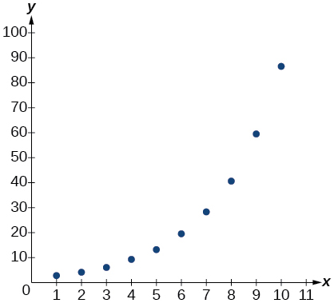
| x | f(x) |
| 0.5 | 18.05 |
| 1 | 17 |
| 3 | 15.33 |
| 5 | 14.55 |
| 7 | 14.04 |
| 10 | 13.5 |
| 12 | 13.22 |
| 13 | 13.1 |
| 15 | 12.88 |
| 17 | 12.69 |
| 20 | 12.45 |
Find a formula for an exponential equation that goes through the points and Then express the formula as an equivalent equation with base e.
Solution
Fitting Exponential Models to Data
What is the carrying capacity for a population modeled by the logistic equation What is the initial population for the model?
The population of a culture of bacteria is modeled by the logistic equation where is in days. To the nearest tenth, how many days will it take the culture to reach of its carrying capacity?
Solution
about days
For the following exercises, use a graphing utility to create a scatter diagram of the data given in the table. Observe the shape of the scatter diagram to determine whether the data is best described by an exponential, logarithmic, or logistic model. Then use the appropriate regression feature to find an equation that models the data. When necessary, round values to five decimal places.
| x | f(x) |
| 1 | 409.4 |
| 2 | 260.7 |
| 3 | 170.4 |
| 4 | 110.6 |
| 5 | 74 |
| 6 | 44.7 |
| 7 | 32.4 |
| 8 | 19.5 |
| 9 | 12.7 |
| 10 | 8.1 |
| x | f(x) |
| 0.15 | 36.21 |
| 0.25 | 28.88 |
| 0.5 | 24.39 |
| 0.75 | 18.28 |
| 1 | 16.5 |
| 1.5 | 12.99 |
| 2 | 9.91 |
| 2.25 | 8.57 |
| 2.75 | 7.23 |
| 3 | 5.99 |
| 3.5 | 4.81 |
Solution
logarithmic;
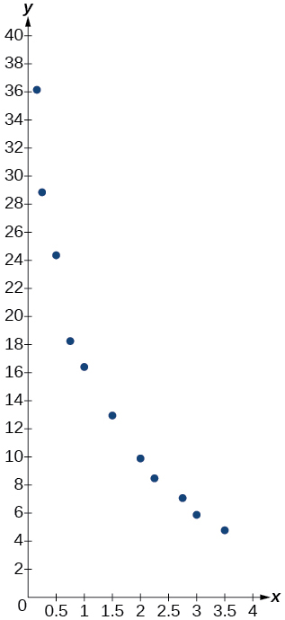
| x | f(x) |
| 0 | 9 |
| 2 | 22.6 |
| 4 | 44.2 |
| 5 | 62.1 |
| 7 | 96.9 |
| 8 | 113.4 |
| 10 | 133.4 |
| 11 | 137.6 |
| 15 | 148.4 |
| 17 | 149.3 |
Practice Test
The population of a pod of bottlenose dolphins is modeled by the function where is given in years. To the nearest whole number, what will the pod population be after years?
Solution
About 13 dolphins.
Find an exponential equation that passes through the points and
Drew wants to save $2,500 to go to the next World Cup. To the nearest dollar, how much will he need to invest in an account now with APR, compounding daily, in order to reach his goal in years?
Solution
An investment account was opened with an initial deposit of $9,600 and earns interest, compounded continuously. How much will the account be worth after years?
Graph the function and its reflection across the y-axis on the same axes, and give the y-intercept.
Solution
y-intercept:
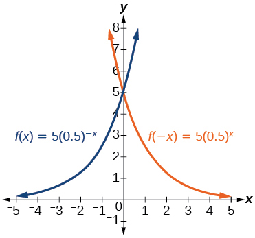
The graph shows transformations of the graph of What is the equation for the transformation?
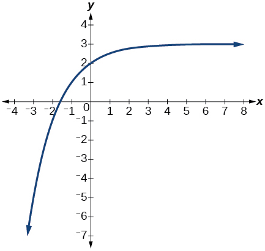
Rewrite as an equivalent exponential equation.
Solution
Rewrite as an equivalent logarithmic equation.
Solve for by converting the logarithmic equation to exponential form.
Solution
Evaluate without using a calculator.
Evaluate using a calculator. Round to the nearest thousandth.
Solution
Graph the function
State the domain, vertical asymptote, and end behavior of the function
Solution
Domain: Vertical asymptote: End behavior: and
Rewrite as a sum.
Rewrite in compact form.
Solution
Rewrite as a product.
Use properties of logarithm to expand
Solution
Condense the expression to a single logarithm.
Rewrite as a logarithm. Then apply the change of base formula to solve for using the natural log. Round to the nearest thousandth.
Solution
Solve by rewriting each side with a common base.
Use logarithms to find the exact solution for . If there is no solution, write no solution.
Solution
Find the exact solution for If there is no solution, write no solution.
Find the exact solution for If there is no solution, write no solution.
Solution
no solution
Find the exact solution for If there is no solution, write no solution.
Find the exact solution for If there is no solution, write no solution.
Solution
Use the definition of a logarithm to find the exact solution for
Use the one-to-one property of logarithms to find an exact solution for If there is no solution, write no solution.
Solution
The formula for measuring sound intensity in decibels is defined by the equation where is the intensity of the sound in watts per square meter and is the lowest level of sound that the average person can hear. How many decibels are emitted from a rock concert with a sound intensity of watts per square meter?
A radiation safety officer is working with grams of a radioactive substance. After days, the sample has decayed to grams. Rounding to five significant digits, write an exponential equation representing this situation. To the nearest day, what is the half-life of this substance?
Solution
half-life: about days
Write the formula found in the previous exercise as an equivalent equation with base Express the exponent to five significant digits.
A bottle of soda with a temperature of Fahrenheit was taken off a shelf and placed in a refrigerator with an internal temperature of After ten minutes, the internal temperature of the soda was Use Newton’s Law of Cooling to write a formula that models this situation. To the nearest degree, what will the temperature of the soda be after one hour?
Solution
The population of a wildlife habitat is modeled by the equation where is given in years. How many animals were originally transported to the habitat? How many years will it take before the habitat reaches half its capacity?
Enter the data from Table 14 into a graphing calculator and graph the resulting scatter plot. Determine whether the data from the table would likely represent a function that is linear, exponential, or logarithmic.
| x | f(x) |
| 1 | 3 |
| 2 | 8.55 |
| 3 | 11.79 |
| 4 | 14.09 |
| 5 | 15.88 |
| 6 | 17.33 |
| 7 | 18.57 |
| 8 | 19.64 |
| 9 | 20.58 |
| 10 | 21.42 |
Solution
logarithmic
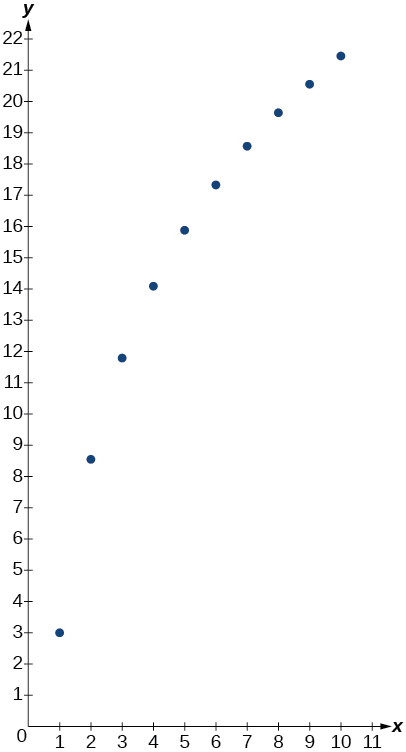
The population of a lake of fish is modeled by the logistic equation where is time in years. To the nearest hundredth, how many years will it take the lake to reach of its carrying capacity?
For the following exercises, use a graphing utility to create a scatter diagram of the data given in the table. Observe the shape of the scatter diagram to determine whether the data is best described by an exponential, logarithmic, or logistic model. Then use the appropriate regression feature to find an equation that models the data. When necessary, round values to five decimal places.
| x | f(x) |
| 1 | 20 |
| 2 | 21.6 |
| 3 | 29.2 |
| 4 | 36.4 |
| 5 | 46.6 |
| 6 | 55.7 |
| 7 | 72.6 |
| 8 | 87.1 |
| 9 | 107.2 |
| 10 | 138.1 |
Solution
exponential;
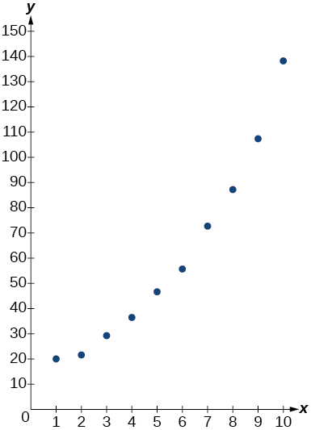
| x | f(x) |
| 3 | 13.98 |
| 4 | 17.84 |
| 5 | 20.01 |
| 6 | 22.7 |
| 7 | 24.1 |
| 8 | 26.15 |
| 9 | 27.37 |
| 10 | 28.38 |
| 11 | 29.97 |
| 12 | 31.07 |
| 13 | 31.43 |
| x | f(x) |
| 0 | 2.2 |
| 0.5 | 2.9 |
| 1 | 3.9 |
| 1.5 | 4.8 |
| 2 | 6.4 |
| 3 | 9.3 |
| 4 | 12.3 |
| 5 | 15 |
| 6 | 16.2 |
| 7 | 17.3 |
| 8 | 17.9 |
Solution
logistic;
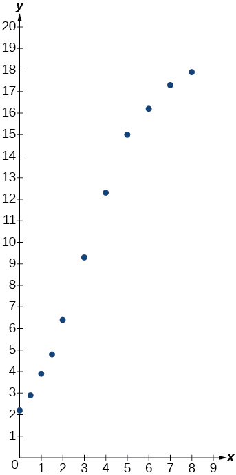